Uso
-
Para implementar Menú Web Lince en nuestro proyecto, simplemente copiamos el código HTML y agregamos la ruta al archivo CSS.
-
Para que el archivo JavaScript funcione correctamente, es necesario agregar la librería de jQuery.
Menú con el name app
Para usar el menú con el nombre de la aplicación, lo configuramos de la siguiente manera.
Código
Código por defecto.
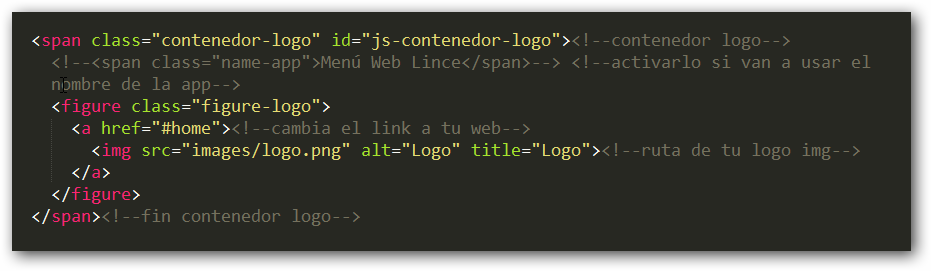Descomenta la etiqueta span que contiene el texto Menú Web Lince.
Y elimina toda la etiqueta figure.

Apariencia
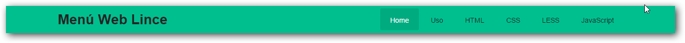Clases para equipos móviles
Menú Web Lince toma mas importancia a la apariencia para equipos móviles, para ello implementamos algunas clases.
Por defecto
Esta apariencia se muestra por defecto.
Código
Esta clase biene por defecto.
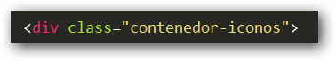Apariencia
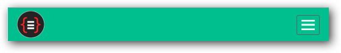Icono de menú web móvil a la izquierda
Para poder mostrar esa apariencia solo agregamos la siguiente clase.
icono-menu-movil-left
Códgio
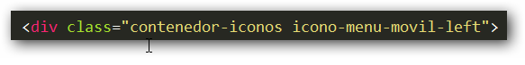Apariencia
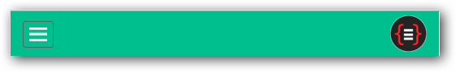Icono del menú al centro
Para poder mostrar esta apariencia solo agregamos la siguiente clase.
icono-menu-movil-center
Código
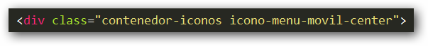Apariencia
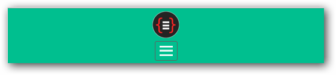Al realizar scroll la apariencia es la siguiente.
Tipos de listas Menú Web Lince
Por defecto
Código
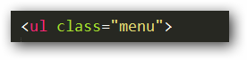Apariencia
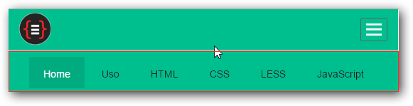Lista left
Código
list-left
Apariencia
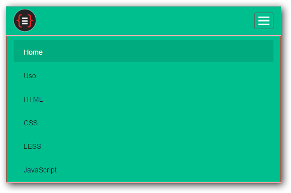Lista right
Código
list-right
Apariencia
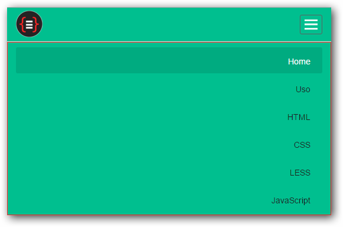Lista center
Código
list-center
Apariencia
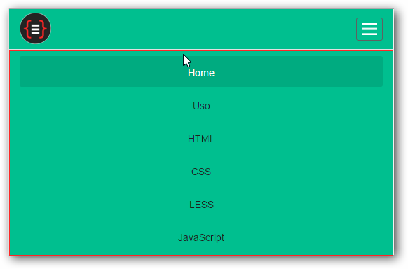Código HTML para el Menú Web Lince
Código HTML limpio sin comentarios de ayuda, para ver la ayuda tienes que abrir el el archivo index.html con un editor de codigo como Sublime Text por ejemplo.
<nav class="contenedor-menu" id="js-contenedor-menu">
<div class="container"><!--sirve solo para bootstrap-->
<div class="contenedor-iconos"><!--aquí va la clase de como se mostrara el icono menú móvil : icono-menu-movil-left o icono-menu-movil-center -->
<span class="contenedor-logo-nameapp" id="js-contenedor-logo-nameapp">
<!--<span class="name-app">Menú Web Lince</span>--> <!--Descomentarlo si van a usar el nombre de la app-->
<figure class="figure-logo">
<a href="#home">
<img src="images/logo.png" alt="Logo" title="Logo">
</a>
</figure>
</span>
<div class="icono-menu-movil" id="js-icono-menu-movil">
<img src="images/ico-menu.png" alt="Menú">
</div>
</div>
<div class="box-main-menu">
<ul class="menu">
<li class="active">
<a href="#home">Home</a>
</li>
<li>
<a href="#html">HTML</a>
</li>
<li>
<a href="#css">CSS</a>
</li>
<li>
<a href="#less">LESS</a>
</li>
<li>
<a href="#javascript">JavaScript</a>
</li>
<li>
<a href="#uso">Uso</a>
</li>
</ul>
</div>
</div>
</nav>
CSS
Para esta pequeña aplicación he utilizado los media queries de bootstrap
Eres libre de usar tus propias media queries.
Media queries para Tablets.
@media (min-width: 768px) and (max-width: 991px){}Media queries para smartphones.
@media (max-width: 767px){}LESS
Este proyecto tiene tres archivos LESS con los siguientes nombres (main.less, estilos.less, variables.less).
-
main.less: este archivo como su nombre lo dice es el principal. -
estilos.less: este archivo contiene todos los estilos. -
variables.less: este archivo contiene todas las variables.
Compilar de LESS a CSS
Hay muchas formas de compilar archivos LESS a CSS, para facilitar las cosas utilizaremos una apliación.
En mi caso utilizare WinLess, ya que uso el sistema operativo Windows, si usas otro sistema operativo solo te bastara buscar un poco.
Abrimos la aplicación WinLess, presionamos en el botón Add folder, seleccionar solo al archivo main.less como en la imagen y presionar el botón Compile.
JavaScript
Utilize jQuery para que funcione correctamente.
Código Javacript para el Menú Web Lince.
$(document).ready(function(){
var list_menu = $('.box-main-menu'),
menu_fijo = $('#js-contenedor-menu'),
menu_offset = menu_fijo.offset();
/*
Esta función sirve para que cuando el usuario haga click en el botón de Menú Web se despliegue o repliegue.
----
Solo se podrá apreciar en pantallas menores a 768px
*/
$('#js-icono-menu-movil').on('click',function(e){
e.preventDefault();
list_menu.slideToggle();
});
//resize sirve para validar cuando el navegador es cambiado de tamaño manualmente.
$(window).resize(function() {
/*
esta condición sirve para mostrar el menú si esta oculto.
---------
cuando la pantalla sea mayor a 768px
*/
var w = $(window).width();
if (w > 768 && list_menu.is(':hidden')) {
list_menu.removeAttr('style');
};
});
$(window).on('scroll', function() {
//========== Menú fijo ===========
/*
Cuando el usuario haga scroll automáticamente el menú web se quedara estático
*/
if($(window).scrollTop() > menu_offset.top) {
menu_fijo.addClass('menu-fijo');
} else {
menu_fijo.removeClass('menu-fijo');
}
var ancho = $(window).width();
scroleo(ancho)
//resize sirve para validar cuando el navegador es cambiado de tamaño manualmente.
$(window).resize(function() {
var ancho = $(window).width();
scroleo(ancho);
});
});
var scroleo = function(ancho){
if($(window).scrollTop() > 1) {
//Esta condición se cumple si la pantalla es mayor o igual a 768px y menor o igual a 991px
if(ancho >= 768 && ancho <= 991){
/**
Si la condición se cumple agregamos la clase hide-logo
**/
$('#js-contenedor-menu #js-contenedor-logo-nameapp').addClass('hide-logo');
}
/*
Esta condición se cumple si el contenedor con la clase contenedor-iconos tiene al lado clase icono-menu-movil-center
--------
y la pantalla sea menor o igual a 767
*/
if(ancho <= 767){
/**
Si la condición se cumple agregamos las clases hide-logo height-menu
**/
$('#js-contenedor-menu .icono-menu-movil-center').addClass('hide-logo height-menu');
}
} else{
/**
Si no se cumple removemos la clase hide-logo
**/
if(ancho >= 768 && ancho <= 991){
$('#js-contenedor-menu #js-contenedor-logo-nameapp').removeClass('hide-logo');
}
/**
Si no se cumple removemos las clases hide-logo y height-menu
**/
if(ancho <= 767){
$('#js-contenedor-menu .icono-menu-movil-center').removeClass('hide-logo height-menu');
}
}
};
});